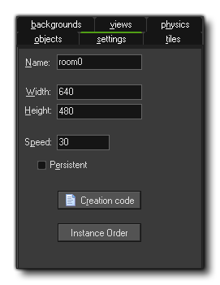
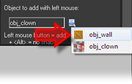
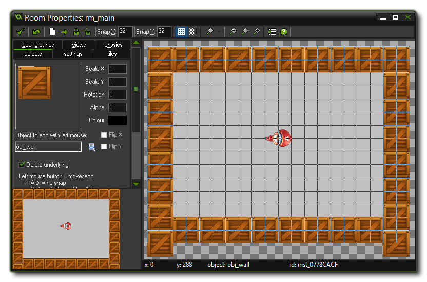

Tutorial
Page 10 of 15
Adding A Room
Now that we have created the game objects there is one more thing to do. We need to create the room in which the game takes place!
For most games, designing effective rooms (which can be considered as generally the "levels" of the game) is a time-consuming task because here we must find the right balance and progression in the game. But for
"Catch the Clown" the room is going to be very simple: a walled area with one instance of the clown object inside it, bouncing around.
To start with, from the drop down Resources menu in the main GameMaker window, choose Create Room. This will create a room and open the Room Editor window (you
can also right click on the "Rooms" folder in the resource tree and select Create Room). On the left you can see some tabbed pages, and here you should select the tab labelled Settings.

These are the base settings for your room, with the room width and height (in pixels) and the room speed being the important things to note. The room speed is basically the number of times
that a game step occurs in a second, so our game will run the step event 30 times each second. We don't need to change these values, so leave them as they are and follow these steps:
- In the Name field type in "rm_main". This is the name that will identify this resource in your game, much like the sprite names, sound names, and object names that we have already defined. Note that
in programming these names are called indexes, so the room name is also the room index, as the sprite name, for example, is also known as the sprite index. This naming is not
important for this tutorial, but as you progress further with GameMaker you will see it used more and more to refer to resources.
- Select the Objects tab. Enlarge the window somewhat such that you can see the complete room (you can use the mouse wheel to zoom the game room in and out too).
- At the top of the room editor, make sure the value for Snap X and Snap Y is 32, as the size of our sprites is 32x32 pixels and this makes it easier to place the sprites at the correct locations.
These values are not used anywhere else except the Room Editor and are used simply as a guide for placing things.
- On the left you can see the image of the an object, which is the currently selected object. it should be the clown, but if it is not, then click the image and select the "obj_clown" object. Now, place one
instance of it in the room by clicking with the mouse somewhere in the centre of the grey area. If you place more than one by mistake, you can right-click on it and select Delete to remove it again.
- Click on the icon with the menu symbol next to the field "obj_clown". Here you can also select which object to add, and you should now select "obj_wall".

- Click on the different "cells" bordering the room to put instances there. To speed this up, you can press and hold the <Shift> and <Control> keys on the keyboard and drag the mouse with the mouse
button pressed (it is recommended that the option Delete Underlying is switched on for this so as to avoid placing more than one instance in the same position). As mentioned previously, you can remove
instances using the right mouse button and selecting Delete from the subsequent pop-up menu, or by holding down the <Control> key while right clicking.
- Once you have placed the walls as shown in the image below, change objects and place an instance of the clown in the middle of the room.

When you are happy with the results, you should click on the green tick at the top left of the window to close and save your room.
© Copyright YoYo Games Ltd. 2015 All Rights Reserved